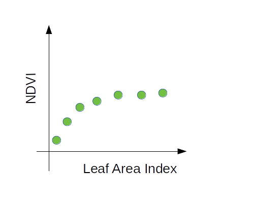

Remote and proximal sensing of terrestrial primary productivity
ATMDP-9999: Big data in ecosystem processes
2.12.2020
jon.atherton@helsinki.fi
We will cover the following:
- What is optical remote sensing of terrestrial productivity exactly?
- Introduction to theory of remote sensing
- Explanation of NDVI with interesting applications
- Retrieval of productivity with NDVI
What is terrestrial primary productivity? a matter of carbon exchange
image based on: M. Campioli et al., Nature communications 7, no. 1 (2016): 1-12. CC BY 4.0, via Wikimedia Commons. Click here for paper.
Measuring productivity (CO2 exchange) in the field

photo credit: Juho Aalto. Click here for a nice intro to measurement of productivity.
Click here for a nice intro to measurement of productivity.
How to RETRIEVE productivity across land surface? Enter optical remote sensing!
A satellite is one type of remote sensing platform. Optical refers to visible, near infrared (NIR) and shortwave infrared (SWIR) wavelengths.
Theory part 1: radiative transfer
Theory part 2: reflectance

Theory part 3: Wavelength
Theory part 4: Spectra & Normalised Difference Vegetation Index (NDVI)
RECAP: go through main points of last few slides
- Scattering and absorption control radiative transfer
- Reflectance is ratio of reflected radiance to irradiance
- Reflectance is measured across the spectrum as function of wavelength
- NDVI quantifies difference between light absorption in visible Vs scattering in NIR
Poll: Chlorophyll absorbs at the leaf scale. What else could affect our canopy observations?
Flinga link in the chat. Answers below (press down only after poll!).Factors that influence remote observations
- Solar-view geometry
- Leaf area
- Leaf angles
- non-photosynthetic reflectance of target (e.g. bark)
- ground properties, especially understory layer
- snow
- atmospheric transmittance
- some of the above properties (leaf area, angles) combine to determine the canopy gap fraction
NDVI application 1: proximal grass growth in Finland
Figure (and previous reflec spectrum) from Atherton, et al. 2020. EarthArxiv, CC-BY. Click here for preprint.
Optical application 2: global greening
NASA video on global greening.Is Finland greening?
Though NDVI responds to greening, it is not the best indicator of leaf area or biomass
Can we use NDVI to predict GPP? Yes.
NDVI based estimation of GPP: CCBY> Joiner, J. et al. Remote Sens. 2018, 10, 1346. This uses a slighly different formulation of LUE model. Click here for paper.
PAR = Photosynthetically active radiation, light that fuels photosyn.
LUE = light use efficiency, i.e. heath status of canopy.
fAPAR = Fraction of PAR that canopy absorbs. Approx linear relationship with NDVI.
What did we cover?
- What is remote sensing of productivity? techniques and platforms to measure CO2 uptake across space
- Based on what theory? Radiative transfer theory
- What is the the NDVI? quantifies difference in scattering in NIR and absorption in vis.
- What can it be used for? Linked to global greening , and GPP
Lab practical and next session
- LAB: Use Google Earth Engine to extract Sentinel NDVI for urban Helsinki
- NEXT: Beyond the NDVI: more remote sensing methods for retrieval of vegetation productivity including Sun-induced Fluorescence, microwave remote sensing and LIDAR.